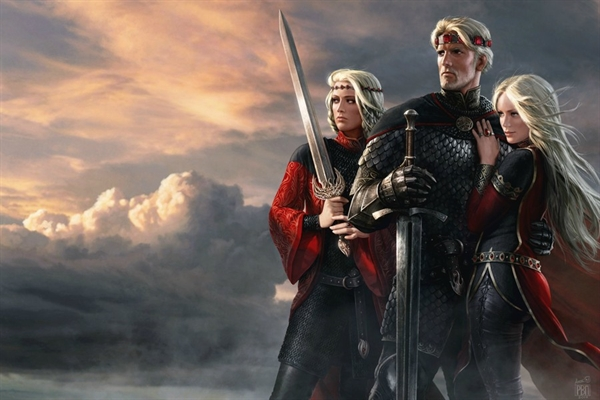

Aegon, Visenya e Rhaenys
A Guerra da Conquista é o nome dado à série de empreitadas militares em que Aegon I Targaryen conquistou Westeros.
Apoiado por suas duas esposas-irmãs (Visenya e Rhaenys), seus dragões e um pequeno exército, Aegon submeteu seis dos Sete Reinos.
 O mundo de fogo e sangue